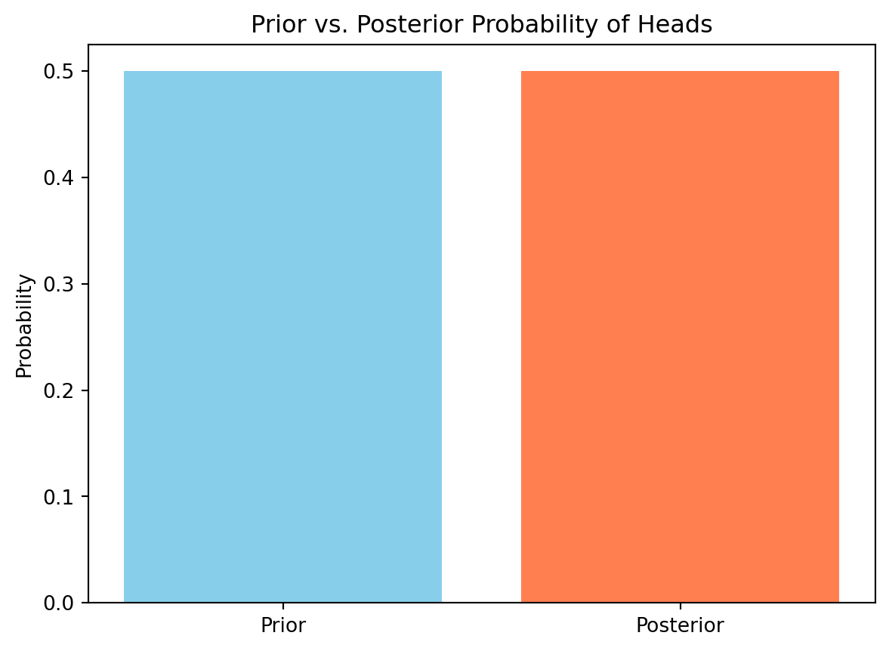
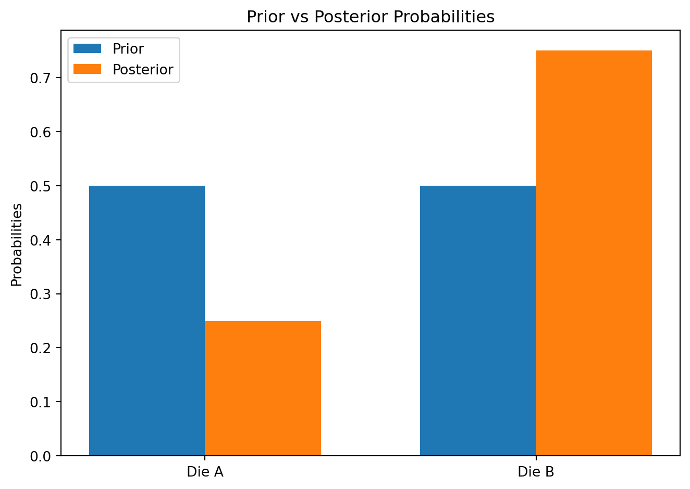
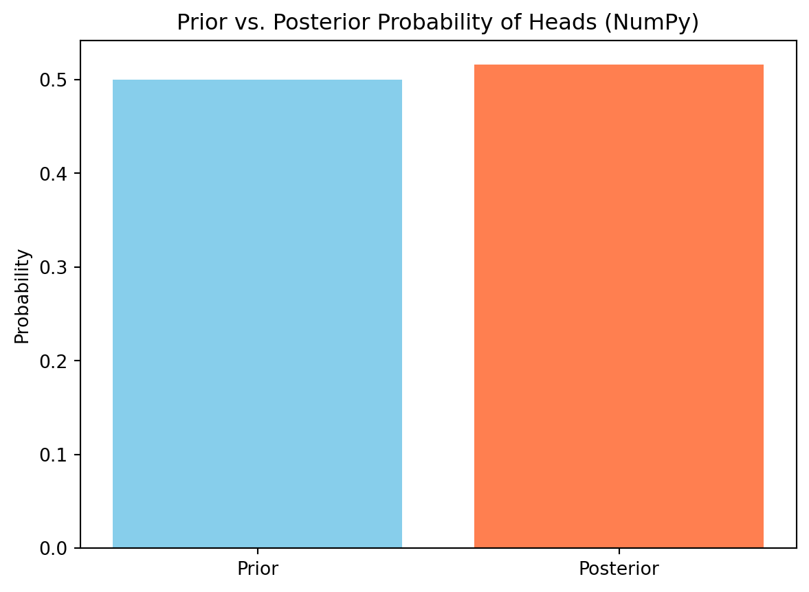
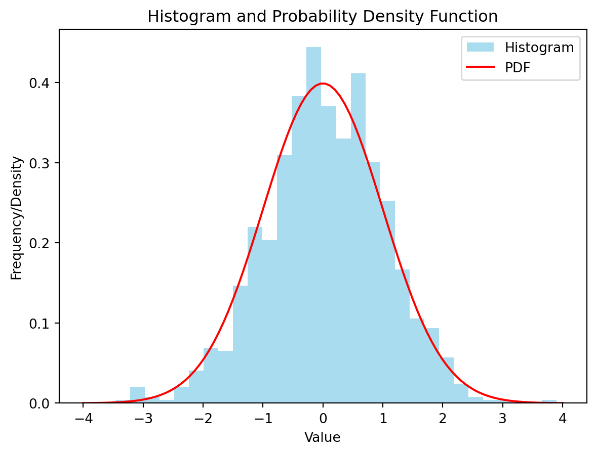
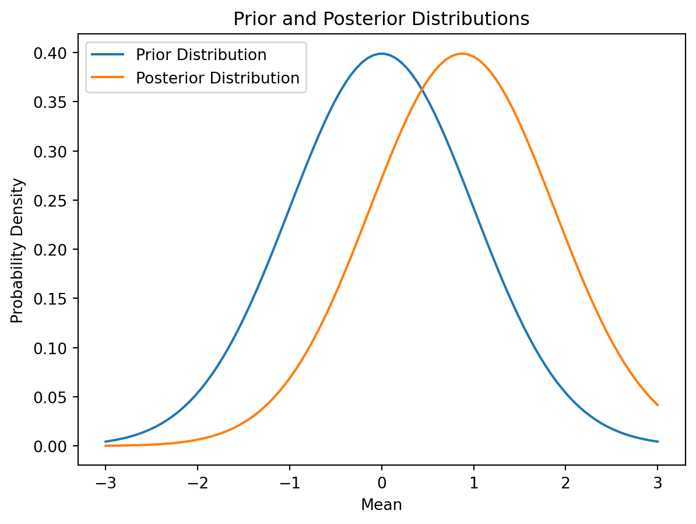
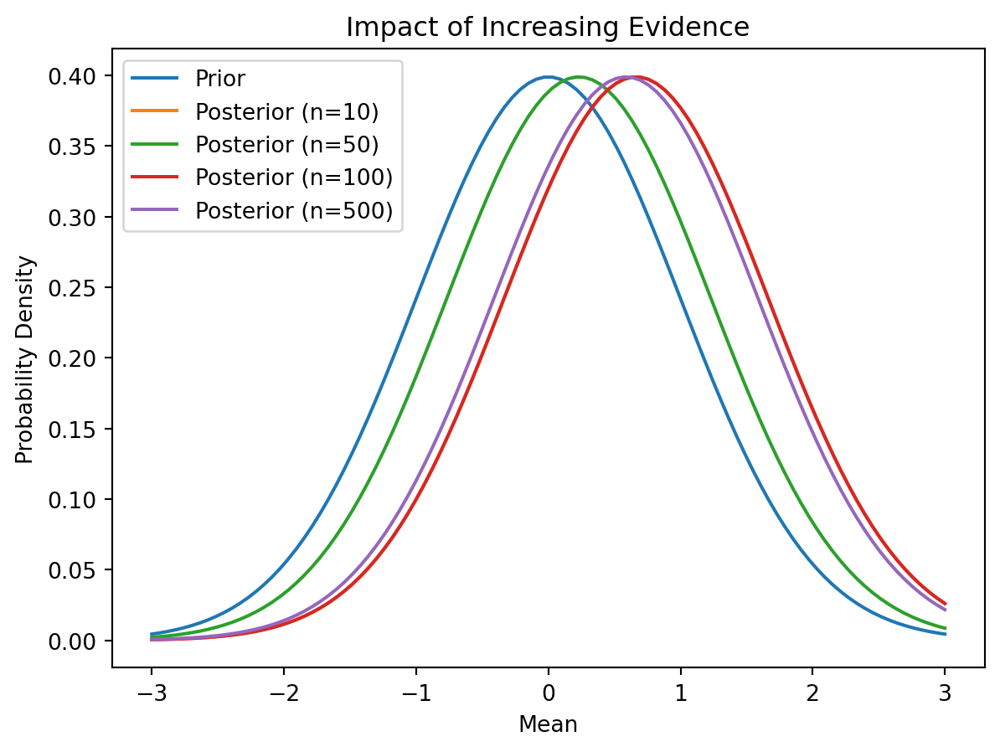
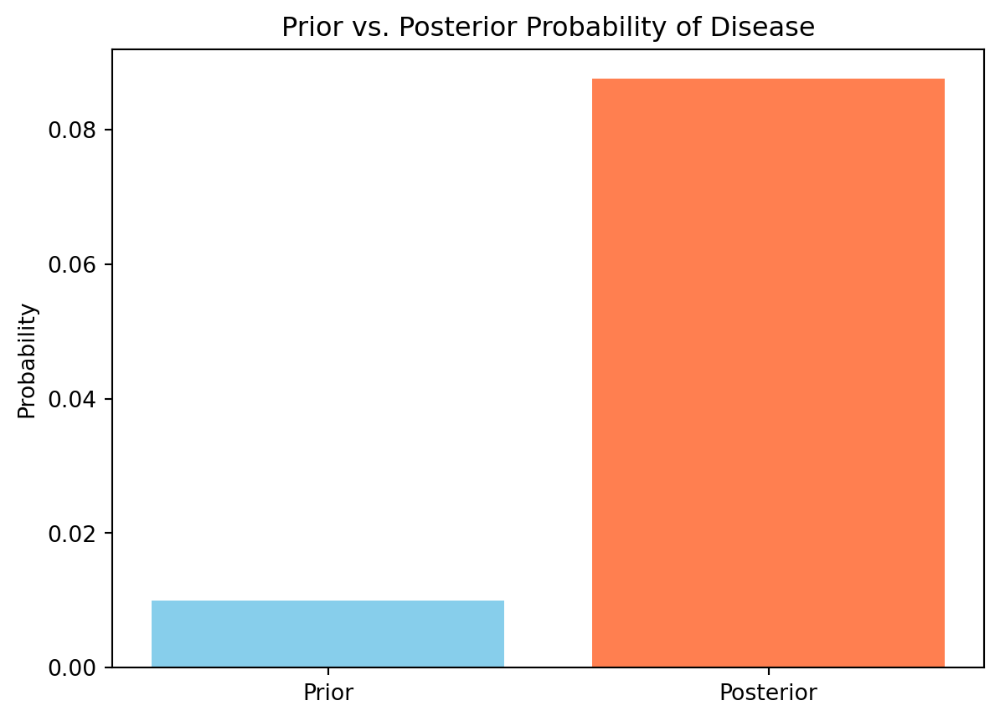

Let’s start with a simple example: tossing a fair coin. We want to calculate the probability of getting heads (\(H\)) given that we’ve already observed one head in two tosses. Intuitively, we might think the probability remains 0.5, but Bayes’ Theorem allows us to formally express and calculate this.
We can define the following:
\(P(H)\): Prior probability of getting heads (0.5 for a fair coin).
\(P(T)\): Prior probability of getting tails (0.5 for a fair coin).
\(A\): Event of observing one head in two tosses.
We want to find \(P(H|A)\), the probability of getting heads given event A. Using Bayes’ Theorem:
\(P(H|A) = \frac{P(A|H)P(H)}{P(A)}\)
Calculating the components:
\(P(H) = 0.5\)
\(P(A|H)\): Probability of observing one head in two tosses given the first toss was heads. This is the probability of getting one head and one tail in the remaining toss, which is \(\binom{1}{1}(0.5)^1(0.5)^1 = 0.5\).
\(P(A)\): Probability of observing one head in two tosses. This can happen in two ways: HT or TH. Therefore, \(P(A) = P(HT) + P(TH) = (0.5)^2 + (0.5)^2 = 0.5\).
Plugging these values into Bayes’ Theorem:
\(P(H|A) = \frac{0.5 \times 0.5}{0.5} = 0.5\)
As expected, the posterior probability remains 0.5. The prior information didn’t change the probability of getting heads on the next toss.
import matplotlib.pyplot as plt# Prior probabilitiesprior_H =0.5prior_T =0.5# Likelihood (probability of observing one head in two tosses given heads on the first toss)likelihood_H =0.5# Probability of observing one head in two tossesprob_A =0.5# Posterior probabilityposterior_H = (likelihood_H * prior_H) / prob_Aprint(f"Posterior probability of getting heads: {posterior_H}")# Visualization (simple bar chart)plt.bar(['Prior', 'Posterior'], [prior_H, posterior_H], color=['skyblue', 'coral'])plt.ylabel("Probability")plt.title("Prior vs. Posterior Probability of Heads")plt.show()
Posterior probability of getting heads: 0.5

8.0.2 The Monty Hall Problem
The Monty Hall problem is a classic example illustrating the impact of new information on prior beliefs. A contestant chooses one of three doors. Behind one door is a car, and behind the others are goats. After the contestant chooses a door, Monty Hall (the host), who knows where the car is, opens one of the unchosen doors to reveal a goat. The contestant is then given the option to switch doors. Should they?
Bayes’ Theorem helps clarify the situation. Let’s define:
\(C_i\): The car is behind door \(i\) (i = 1, 2, 3). \(P(C_i) = \frac{1}{3}\) for each \(i\).
\(M_j\): Monty opens door \(j\).
\(D_k\): The contestant initially chooses door \(k\).
Let’s assume the contestant chooses door 1 (\(D_1\)). Monty opens door 3 revealing a goat (\(M_3\)). We want to calculate the probability that the car is behind door 2 (\(P(C_2|D_1, M_3)\)) given the information. Applying Bayes’ theorem:
\(P(M_3|C_2, D_1) = 1\) (Monty must open door 3 if the car is behind door 2 and the contestant chose door 1)
\(P(M_3|D_1) = P(M_3|C_2, D_1)P(C_2) + P(M_3|C_3, D_1)P(C_3) = 1 \times \frac{1}{3} + \frac{1}{2} \times \frac{1}{3} = \frac{1}{2}\) (This is the probability Monty opens door 3 given the contestant chose door 1. It considers both possibilities of the car being behind door 2 or 3).
This shows that switching doors doubles the probability of winning the car.
8.0.3 Bayes’ Theorem with Dice
Let’s consider two six-sided dice, one fair (die A) and one loaded (die B). Die B has a probability of \(\frac{1}{2}\) of rolling a 6 and \(\frac{1}{10}\) for each of the other numbers (1-5). We roll one of the dice (we don’t know which one) and observe a 6. What’s the probability it was die B?
Let:
\(A\): Event that we choose die A. \(P(A) = 0.5\)
\(B\): Event that we choose die B. \(P(B) = 0.5\)
\(S_6\): Event of rolling a 6.
We want to find \(P(B|S_6)\). Using Bayes’ Theorem:
\(P(B|S_6) = \frac{P(S_6|B)P(B)}{P(S_6)}\)
\(P(B) = 0.5\)
\(P(S_6|B) = 0.5\) (Probability of rolling a 6 given die B)
The probability that it was die B given we rolled a 6 is 0.75.
import matplotlib.pyplot as pltimport numpy as np# Prior probabilitiesprior_A =0.5prior_B =0.5# Likelihoodslikelihood_6_A =1/6likelihood_6_B =0.5# Probability of rolling a 6prob_6 = (likelihood_6_A * prior_A) + (likelihood_6_B * prior_B)# Posterior probabilityposterior_B = (likelihood_6_B * prior_B) / prob_6print(f"Posterior probability that it was die B: {posterior_B}")#Visualizationlabels ='Die A', 'Die B'prior = [prior_A, prior_B]posterior = [1- posterior_B, posterior_B]width =0.35fig, ax = plt.subplots()rects1 = ax.bar(np.arange(len(labels)) - width/2, prior, width, label='Prior')rects2 = ax.bar(np.arange(len(labels)) + width/2, posterior, width, label='Posterior')ax.set_ylabel('Probabilities')ax.set_title('Prior vs Posterior Probabilities')ax.set_xticks(np.arange(len(labels)))ax.set_xticklabels(labels)ax.legend()fig.tight_layout()plt.show()
Posterior probability that it was die B: 0.75

graph LR
A[Prior: Choose Die A (0.5)] --> |Roll a 6| C{P(6|A) = 1/6};
B[Prior: Choose Die B (0.5)] --> |Roll a 6| C{P(6|B) = 0.5};
C --> D[P(6) = 1/3];
D --> E[Posterior: Die B (0.75)];
8.1 Leveraging NumPy for Efficient Calculations
8.1.1 NumPy Arrays and Bayes’ Theorem
NumPy, Python’s numerical computing library, provides significant advantages when working with Bayes’ Theorem, especially when dealing with larger datasets or more complex scenarios. Its core data structure, the NumPy array, allows for vectorized operations, making calculations significantly faster than using standard Python lists and loops. This efficiency becomes essential when dealing with high-dimensional probability distributions or numerous data points.
Instead of calculating probabilities element-by-element, NumPy enables us to perform operations across entire arrays simultaneously. This vectorization dramatically improves performance, particularly for large datasets where the computational cost of iterative loops can be prohibitive.
8.1.2 Calculating Probabilities with NumPy
Let’s revisit the coin toss example from the previous section, but now using NumPy. Suppose we have 1000 coin tosses, and we want to calculate the probability of getting heads given that we’ve already observed a certain number of heads in the first 500 tosses.
import numpy as npimport matplotlib.pyplot as plt# Simulate 1000 coin tosses (0 for tails, 1 for heads)tosses = np.random.randint(0, 2, 1000)# First 500 tossesfirst_500 = tosses[:500]# Number of heads in the first 500 tossesnum_heads = np.sum(first_500)# Prior probability (assuming a fair coin)prior_heads =0.5# Likelihood (probability of observing the remaining tosses given the first 500)# We'll simplify this for demonstration; a more rigorous approach would involve a binomial distribution.# This simplified approach assumes independence between tosses.likelihood_heads = num_heads /500#Simplified likelihood# Posterior probability using NumPyposterior_heads = (likelihood_heads * prior_heads) / ((likelihood_heads * prior_heads) + ((1-likelihood_heads) * (1-prior_heads)))print(f"Number of heads in first 500 tosses: {num_heads}")print(f"Posterior probability of heads (NumPy): {posterior_heads}")#Visualizationplt.bar(['Prior', 'Posterior'], [prior_heads, posterior_heads], color=['skyblue', 'coral'])plt.ylabel("Probability")plt.title("Prior vs. Posterior Probability of Heads (NumPy)")plt.show()
Number of heads in first 500 tosses: 258
Posterior probability of heads (NumPy): 0.516

This code demonstrates the efficiency of NumPy: calculations that would involve explicit looping in standard Python are now handled efficiently by NumPy’s vectorized operations.
8.1.3 Handling Large Datasets with NumPy
When dealing with very large datasets, NumPy’s memory efficiency and optimized functions become even more critical. Consider a scenario with millions of data points and multiple features. Using standard Python lists and loops would be extremely slow and could easily exhaust available memory. NumPy’s arrays, however, are designed for efficient storage and manipulation of large numerical data.
Let’s illustrate with a simplified example of Bayesian classification:
import numpy as np# Simulate a large dataset (1 million data points, 2 features)data = np.random.rand(1000000, 2)labels = np.random.randint(0, 2, 1000000) # 0 or 1 labels#Let's assume a simple Gaussian Naive Bayes for demonstration. We will avoid explicit calculation of probabilities for brevity. In a real-world scenario, you would use a library like scikit-learn for this.#In a real application you'd use a library like scikit-learn for efficient calculation of probabilities and posterior predictions.#Example of calculating means for each class using NumPyclass0_indices = labels ==0class1_indices = labels ==1mean_class0 = np.mean(data[class0_indices,:], axis=0)mean_class1 = np.mean(data[class1_indices,:], axis=0)print(f"Mean of features for class 0: {mean_class0}")print(f"Mean of features for class 1: {mean_class1}")
Mean of features for class 0: [0.49973681 0.50035293]
Mean of features for class 1: [0.50056683 0.49957733]
This example showcases how NumPy handles the large dataset efficiently. In a real-world application, you would incorporate more complex Bayesian methods (like those found in libraries such as scikit-learn), but the foundation of efficient data handling remains NumPy arrays. Note that for true Bayesian classification on large datasets, libraries like scikit-learn are highly recommended due to their optimized implementations.
graph LR
A[Large Dataset (Millions of points)] --> B(NumPy Array);
B --> C[Efficient Storage];
B --> D[Vectorized Operations];
D --> E[Fast Probability Calculations];
E --> F[Bayesian Classification];
8.2 Visualizing Results with Matplotlib
Matplotlib is a powerful Python library for creating static, interactive, and animated visualizations. It’s invaluable for understanding and communicating the results of Bayesian calculations. Visualizing probability distributions, particularly the evolution from prior to posterior, is essential for intuitive grasping of Bayes’ Theorem’s impact.
8.2.1 Creating Histograms and Probability Distributions
Before diving into Bayesian visualizations, let’s review how to create histograms and probability distributions with Matplotlib. Histograms are excellent for displaying the frequency distribution of data, while various plotting functions allow for visualizing probability density functions (PDFs).
import numpy as npimport matplotlib.pyplot as plt# Generate some sample datadata = np.random.normal(loc=0, scale=1, size=1000) # Normal distribution# Create a histogramplt.hist(data, bins=30, density=True, alpha=0.7, color='skyblue', label='Histogram')# Overlay a probability density function (PDF)x = np.linspace(-4, 4, 100)y = (1/ np.sqrt(2* np.pi)) * np.exp(-0.5* x**2) #PDF of standard normal distributionplt.plot(x, y, 'r-', label='PDF')plt.xlabel('Value')plt.ylabel('Frequency/Density')plt.title('Histogram and Probability Density Function')plt.legend()plt.show()

This code generates a histogram of the sample data and overlays the theoretical probability density function of the standard normal distribution for comparison.
8.2.2 Visualizing Prior and Posterior Distributions
Visualizing the prior and posterior distributions is key to understanding how evidence updates our beliefs. We can use Matplotlib to plot both distributions on the same graph, clearly showcasing the shift in probability mass after incorporating new evidence.
Let’s consider a simple example where we have a prior belief about the mean of a normal distribution, and we then observe some data points.
import numpy as npimport matplotlib.pyplot as pltfrom scipy.stats import norm# Prior distribution parametersprior_mean =0prior_std =1# Observed data (example)data = np.array([0.5, 1.2, 0.8, 1.0])# Posterior distribution (simplified calculation - in practice, use conjugate priors for easier calculations)posterior_mean = np.mean(data)posterior_std =1# Simplified for demonstration. A proper calculation would incorporate the prior variance and data variance.#Plot prior and posteriorx = np.linspace(-3,3,100)plt.plot(x, norm.pdf(x, prior_mean, prior_std), label='Prior Distribution')plt.plot(x, norm.pdf(x, posterior_mean, posterior_std), label='Posterior Distribution')plt.xlabel('Mean')plt.ylabel('Probability Density')plt.title('Prior and Posterior Distributions')plt.legend()plt.show()

This code plots both the prior and posterior distributions, showing how the posterior is centered closer to the observed data, reflecting the updated belief. Remember that a proper posterior calculation would involve more complex formulas incorporating prior and data variances. This example simplifies the calculation for illustrative purposes.
8.2.3 Illustrating the Impact of Evidence
Multiple plots can demonstrate how increasing evidence gradually refines our belief. By plotting posterior distributions for progressively more data, we can visualize the convergence towards a more precise estimate.
import numpy as npimport matplotlib.pyplot as pltfrom scipy.stats import norm# Prior distributionprior_mean =0prior_std =1# Generate data in batchesdata_batches = [np.random.normal(loc=0.5, scale=1, size=i) for i in [10, 50, 100, 500]]#plotting multiple posteriors (simplified calculations - use conjugate priors for proper Bayesian inference in real-world problems)x = np.linspace(-3, 3, 100)plt.plot(x, norm.pdf(x, prior_mean, prior_std), label='Prior')for i, data inenumerate(data_batches): posterior_mean = np.mean(data) posterior_std =1#Simplified for demonstration. A true calculation would incorporate prior and data variance plt.plot(x, norm.pdf(x, posterior_mean, posterior_std), label=f'Posterior (n={len(data)})')plt.xlabel('Mean')plt.ylabel('Probability Density')plt.title('Impact of Increasing Evidence')plt.legend()plt.show()

This illustrates how the posterior distribution becomes increasingly narrow and centered around the true mean (0.5 in this case) as more data is observed, showcasing the effect of accumulating evidence in Bayesian inference. Again, simplified posterior calculations are used here; more complex techniques are necessary for precise results in real-world applications.
graph LR
A[Prior Distribution] --> B(Evidence);
B --> C[Posterior Distribution 1];
C --> D(More Evidence);
D --> E[Posterior Distribution 2];
E --> F(More Evidence);
F --> G[Posterior Distribution 3];
G --> H[Convergence];
8.3 Putting it all Together: A Detailed Example
This section combines the techniques discussed earlier to solve a more realistic problem using Bayes’ Theorem with Python, NumPy, and Matplotlib.
8.3.1 Problem Definition and Data Representation
Let’s consider a medical diagnostic scenario. We have a test for a rare disease. The prior probability of having the disease (\(P(D)\)) is 0.01 (1% prevalence). The test has the following characteristics:
Sensitivity:\(P(T+|D) = 0.95\) (Probability of a positive test given the disease is present)
Specificity:\(P(T-|¬D) = 0.90\) (Probability of a negative test given the disease is absent)
We want to determine the probability of having the disease (\(P(D|T+)\)) given a positive test result. We’ll simulate data to represent a larger population.
import numpy as npimport matplotlib.pyplot as pltfrom scipy.stats import bernoulli# Parametersprior_prob_disease =0.01sensitivity =0.95specificity =0.90# Simulate a populationpopulation_size =100000disease_status = bernoulli.rvs(prior_prob_disease, size=population_size) # 1 for disease, 0 for no disease# Simulate test resultstest_results = np.zeros(population_size)test_results[disease_status ==1] = bernoulli.rvs(sensitivity, size=np.sum(disease_status))test_results[disease_status ==0] =1- bernoulli.rvs(1-specificity, size=np.sum(1-disease_status)) # 1 for positive, 0 for negative#Count positive testspositive_tests = np.sum(test_results==1)
8.3.2 Applying Bayes’ Theorem using NumPy
We’ll now use Bayes’ Theorem to calculate the posterior probability of having the disease given a positive test result:
\(P(D|T+) = \frac{P(T+|D)P(D)}{P(T+)}\)
We need to calculate \(P(T+)\), the probability of a positive test result, using the law of total probability:
\(P(T+) = P(T+|D)P(D) + P(T+|¬D)P(¬D)\)
Where \(P(T+|¬D) = 1 - P(T-|¬D) = 1 - specificity\). And \(P(¬D) = 1 - P(D)\).
# Calculate P(T+) using NumPyprob_positive_test = (sensitivity * prior_prob_disease) + ((1- specificity) * (1- prior_prob_disease))# Calculate P(D|T+) using NumPyposterior_prob_disease = (sensitivity * prior_prob_disease) / prob_positive_testprint(f"Probability of positive test: {prob_positive_test}")print(f"Posterior probability of disease given positive test: {posterior_prob_disease}")#Alternatively using simulation counts:posterior_prob_disease_sim = np.sum((disease_status==1) & (test_results==1)) / positive_testsprint(f"Posterior probability of disease given positive test (simulation): {posterior_prob_disease_sim}")
Probability of positive test: 0.10849999999999997
Posterior probability of disease given positive test: 0.08755760368663597
Posterior probability of disease given positive test (simulation): 0.010721626576301317
8.3.3 Visualizing Results and Interpretation
Let’s visualize the prior and posterior distributions using Matplotlib. Since we’re dealing with probabilities, we can represent them as simple bar charts.
plt.bar(['Prior', 'Posterior'], [prior_prob_disease, posterior_prob_disease], color=['skyblue', 'coral'])plt.ylabel('Probability')plt.title('Prior vs. Posterior Probability of Disease')plt.show()

The chart clearly shows that although the test is quite accurate (high sensitivity and specificity), the posterior probability of having the disease given a positive test result is still relatively low due to the low prior probability. This highlights the importance of considering prior probabilities when interpreting test results, especially for rare diseases. Even with a positive test, further investigations might be necessary.
graph LR
A[Prior P(D) = 0.01] --> B(Positive Test Result);
B --> C[Posterior P(D|T+) ≈ 0.09];
subgraph ""
A -- P(T+|D) = 0.95 --> B;
A -- P(¬D) = 0.99 --> D;
D -- P(T+|¬D) = 0.1 --> B;
end